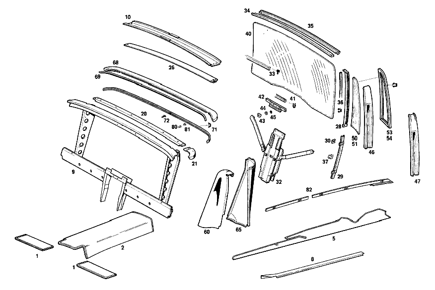

| № | Артикул | Название | Кол. | Примечание | Ограничение |
|---|---|---|---|---|---|
| 1 | A 100 680 00 47 | НАСТИЛ | 2 | ПОД ВОДИТЕЛЬСКИМ СИДЕНЬЕМ Z 55.604/01, Z 55.604/02, Z 55.604/05, Z 55.604/06, Z 55.604/07, Z 55.604/08 [406] ПРИ ЗАКАЗЕ УКАЗЫВАТЬ НОМЕР ЦВЕТА [028] FOR COLOR AND CODE NUMBERS,SEE FOOTN.29 AND 30 [029] UP TO CHASSIS 002417 SEE FOOTN.31 | |
| 2 | A 100 680 06 45 | НАСТИЛ | 1 | ТУННЕЛЬ ЗАДН.ЧАСТИ Z 55.604/01, Z 55.604/02, Z 55.604/05, Z 55.604/06, Z 55.604/07, Z 55.604/08 [406] ПРИ ЗАКАЗЕ УКАЗЫВАТЬ НОМЕР ЦВЕТА [028] FOR COLOR AND CODE NUMBERS,SEE FOOTN.29 AND 30 [029] UP TO CHASSIS 002417 SEE FOOTN.31 | |
| 5 | A 100 680 03 43 | НАСТИЛ | 1 | ВХОД СЛЕВА Z 55.604/01, Z 55.604/02, Z 55.604/05, Z 55.604/06, Z 55.604/07, Z 55.604/08 [406] ПРИ ЗАКАЗЕ УКАЗЫВАТЬ НОМЕР ЦВЕТА [028] FOR COLOR AND CODE NUMBERS,SEE FOOTN.29 AND 30 [029] UP TO CHASSIS 002417 SEE FOOTN.31 | |
| 8 | A 100 686 01 36 | ПЛАНКА | 1 | BELOW FRONT DOOR,AT ENTRANCE,LEFT Z 55.604/01, Z 55.604/02, Z 55.604/05, Z 55.604/06 | |
| 9 | A 100 710 02 05 | СТЕНКА СРЕДНЯЯ | 1 | Z 55.604/01, Z 55.604/02, Z 55.604/05, Z 55.604/06, Z 55.604/07, Z 55.604/08 [003] FROM CHASSIS 000792,WITH THE EXCEPTION OF 000795 | |
| 10 | A 100 711 00 36 | ЭЛЕМЕНТ ЖЕСТКОСТИ | 1 | Z 55.604/01, Z 55.604/05, Z 55.604/07 | |
| 20 | A 100 710 01 10 | СКОБА | 1 | Z 55.604/01, Z 55.604/02, Z 55.604/05, Z 55.604/06, Z 55.604/07, Z 55.604/08 | |
| 21 | A 100 711 01 34 | СОЕДИНЕНИЕ | 1 | СЛЕВА Z 55.604/01, Z 55.604/02, Z 55.604/05, Z 55.604/06, Z 55.604/07, Z 55.604/08 | |
| 26 | A 100 710 00 73 | ЗЕРКАЛО | 1 | Z 55.604/01, Z 55.604/02, Z 55.604/03, Z 55.604/04, Z 55.604/05, Z 55.604/06, Z 55.604/07, Z 55.604/08, Z 55.604/09, Z 55.604/10 | |
| 28 | A 100 710 01 27 | FE. САЛАЗКИ | 1 | СБОКУ СЛЕВА Z 55.604/01, Z 55.604/02, Z 55.604/05, Z 55.604/06, Z 55.604/07, Z 55.604/08 | |
| 29 | A 100 710 00 27 | FE. САЛАЗКИ | 2 | СБОКУ СНИЗУ Z 55.604/01, Z 55.604/02, Z 55.604/05, Z 55.604/06, Z 55.604/07, Z 55.604/08 | |
| 30 | A 100 673 00 47 | КОМПЕНСАТОР | 6 | Z 55.604/01, Z 55.604/02, Z 55.604/05, Z 55.604/06, Z 55.604/07, Z 55.604/08 | |
| 32 | A 100 710 02 04 | СТЕКЛОПОДЪЕМНИК | 1 | Z 55.604/01, Z 55.604/02, Z 55.604/05, Z 55.604/06, Z 55.604/07, Z 55.604/08 [003] FROM CHASSIS 000792,WITH THE EXCEPTION OF 000795 | |
| 33 | A 000 985 03 30 | ПРОФИЛЬ ГЕРМЕТИЗИРУЮЩИЙ | - | Z 55.604/01, Z 55.604/02, Z 55.604/05, Z 55.604/06, Z 55.604/07, Z 55.604/08 | |
| 33 | A 121 725 01 66 | УПЛОТНИТЕЛЬ | - | Z 55.604/01, Z 55.604/02, Z 55.604/05, Z 55.604/06, Z 55.604/07, Z 55.604/08 | |
| 33 | A 115 725 09 65 | Уплотнительная планка | 1 | MOUNTING LEDGE USED для CENTRAL PANEL GLASS PANE 4000 MM Z 55.604/01, Z 55.604/02, Z 55.604/05, Z 55.604/06, Z 55.604/07, Z 55.604/08 [404] ЗАКАЗЫВАТЬ ПОГОННЫМИ МЕТРАМИ | |
| 34 | A 100 710 03 51 | КЛЮЧ | 1 | СВЕРХУ СПЕРЕДИ Z 55.604/01, Z 55.604/02, Z 55.604/03, Z 55.604/04, Z 55.604/05, Z 55.604/06, Z 55.604/07, Z 55.604/08, Z 55.604/09, Z 55.604/10 [004] ENCLOSE SAMPLE WHEN ORDERING | |
| 35 | A 100 710 04 51 | КЛЮЧ | 1 | СВЕРХУ СЗАДИ Z 55.604/01, Z 55.604/02, Z 55.604/03, Z 55.604/04, Z 55.604/05, Z 55.604/06, Z 55.604/07, Z 55.604/08, Z 55.604/09, Z 55.604/10 [004] ENCLOSE SAMPLE WHEN ORDERING | |
| 36 | A 000 985 14 30 | ПРОФИЛЬ ГЕРМЕТИЗИРУЮЩИЙ | - | Z 55.604/01, Z 55.604/02, Z 55.604/03, Z 55.604/04, Z 55.604/05, Z 55.604/06, Z 55.604/07, Z 55.604/08, Z 55.604/09, Z 55.604/10 | |
| 36 | A 000 985 18 30 | ПРОФИЛЬ ГЕРМЕТИЗИРУЮЩИЙ | 0 | Z 55.604/01, Z 55.604/02, Z 55.604/03, Z 55.604/04, Z 55.604/05, Z 55.604/06, Z 55.604/07, Z 55.604/08, Z 55.604/09, Z 55.604/10 | |
| 36 | A 000 985 18 30 | - ПРОФИЛЬ ГЕРМЕТИЗИРУЮЩИЙ | 1 | СБОКУ ВВЕРХУ СЛЕВА 2210 MM LANG Z 55.604/01, Z 55.604/02, Z 55.604/05, Z 55.604/06, Z 55.604/07, Z 55.604/08 | |
| 36 | A 000 985 18 30 | - ПРОФИЛЬ ГЕРМЕТИЗИРУЮЩИЙ | 1 | СНИЗУ СБОКУ 460 MM Z 55.604/01, Z 55.604/02, Z 55.604/05, Z 55.604/06, Z 55.604/07, Z 55.604/08 | |
| 37 | A 001 988 08 78 | СКОБА | - | Z 55.604/01, Z 55.604/02, Z 55.604/05, Z 55.604/06, Z 55.604/07, Z 55.604/08 | |
| 37 | A 002 988 23 78 | Скоба | 6 | Z 55.604/01, Z 55.604/02, Z 55.604/05, Z 55.604/06, Z 55.604/07, Z 55.604/08 | |
| 40 | A 100 711 11 10 | ЗАЩИТНОЕ СТЕКЛО | 1 | Z 55.604/01, Z 55.604/02, Z 55.604/03, Z 55.604/04, Z 55.604/05, Z 55.604/06, Z 55.604/07, Z 55.604/08, Z 55.604/09, Z 55.604/10 [003] FROM CHASSIS 000792,WITH THE EXCEPTION OF 000795 | |
| 41 | A 000 987 66 57 | Уплотнитель стекла | 2 | 285 LONG(для WINDOW REGULATOR RAIL)ORDER BY THE METER Z 55.604/01, Z 55.604/02, Z 55.604/03, Z 55.604/04, Z 55.604/05, Z 55.604/06, Z 55.604/07, Z 55.604/08, Z 55.604/09, Z 55.604/10 [402] БОЛЬШЕ НЕ ПОСТАВЛЯЕТСЯ | |
| 42 | A 100 710 00 15 | FE.ПОДЪЕМНАЯ ПЛАНКА | 2 | Z 55.604/01, Z 55.604/02, Z 55.604/03, Z 55.604/04, Z 55.604/05, Z 55.604/06, Z 55.604/07, Z 55.604/08, Z 55.604/09, Z 55.604/10 | |
| 43 | A 120 984 01 37 | ПОЛЗУН | - | Z 55.604/01, Z 55.604/02, Z 55.604/05, Z 55.604/06, Z 55.604/07, Z 55.604/08 | |
| 43 | A 113 984 00 37 | ПОЛЗУН | - | Z 55.604/01, Z 55.604/02, Z 55.604/05, Z 55.604/06, Z 55.604/07, Z 55.604/08 | |
| 43 | A 115 586 00 72 | РЕМКОМПЛЕКТ | - | Z 55.604/01, Z 55.604/02, Z 55.604/05, Z 55.604/06, Z 55.604/07, Z 55.604/08 | |
| 43 | A 123 720 01 14 | Ремк-т стеклоподъемника | 2 | Z 55.604/01, Z 55.604/02, Z 55.604/05, Z 55.604/06, Z 55.604/07, Z 55.604/08 | |
| 44 | A 000 984 24 56 | Диск | 2 | Z 55.604/01, Z 55.604/02, Z 55.604/05, Z 55.604/06, Z 55.604/07, Z 55.604/08 | |
| 45 | A 000 990 05 48 | Диск | 2 | Z 55.604/01, Z 55.604/02, Z 55.604/05, Z 55.604/06, Z 55.604/07, Z 55.604/08 [402] БОЛЬШЕ НЕ ПОСТАВЛЯЕТСЯ | |
| 46 | A 100 710 01 60 | НАКЛАДКА | 1 | СЛЕВА Z 55.604/01, Z 55.604/05, Z 55.604/07 [004] ENCLOSE SAMPLE WHEN ORDERING | |
| 46 | A 100 710 03 60 | НАКЛАДКА | 1 | СЛЕВА Z 55.604/02, Z 55.604/03, Z 55.604/04, Z 55.604/06, Z 55.604/08, Z 55.604/09, Z 55.604/10 [004] ENCLOSE SAMPLE WHEN ORDERING | |
| 46 | A 100 710 02 60 | НАКЛАДКА | 1 | СПРАВА Z 55.604/01, Z 55.604/05, Z 55.604/07 [004] ENCLOSE SAMPLE WHEN ORDERING | |
| 46 | A 100 710 04 60 | НАКЛАДКА | 1 | СПРАВА Z 55.604/02, Z 55.604/03, Z 55.604/04, Z 55.604/06, Z 55.604/08, Z 55.604/09, Z 55.604/10 [004] ENCLOSE SAMPLE WHEN ORDERING | |
| 47 | N 007997 003011 | САМОРЕЗ | 12 | Z 55.604/01, Z 55.604/02, Z 55.604/05, Z 55.604/06, Z 55.604/07, Z 55.604/08 | |
| 50 | A 100 711 03 10 | Шайба перегородки | 1 | СБОКУ СЛЕВА Z 55.604/01, Z 55.604/05, Z 55.604/07 | |
| 51 | A 100 711 09 10 | ЗАЩИТНОЕ СТЕКЛО | 1 | СБОКУ СЛЕВА Z 55.604/02, Z 55.604/03, Z 55.604/04, Z 55.604/06, Z 55.604/08, Z 55.604/09, Z 55.604/10 | |
| 53 | A 100 711 03 18 | РАМА | 1 | СБОКУ СЛЕВА Z 55.604/01, Z 55.604/05, Z 55.604/07 | |
| 54 | A 100 711 07 18 | РАМА | 1 | СБОКУ СЛЕВА Z 55.604/02, Z 55.604/03, Z 55.604/04, Z 55.604/06, Z 55.604/08, Z 55.604/09, Z 55.604/10 | |
| 60 | A 100 710 07 18 | Обшивка | - | Z 55.604/01, Z 55.604/02, Z 55.604/05, Z 55.604/06, Z 55.604/07, Z 55.604/08 | |
| 60 | A 100 710 09 18 | Обшивка | 1 | СБОКУ СЛЕВА Z 55.604/01, Z 55.604/02, Z 55.604/05, Z 55.604/06, Z 55.604/07, Z 55.604/08 | |
| 65 | A 100 711 05 22 | НАПРАВЛЯЮЩАЯ | 1 | СЗАДИ СЛЕВА Z 55.604/01, Z 55.604/02, Z 55.604/05, Z 55.604/06, Z 55.604/07, Z 55.604/08 | |
| 68 | A 100 710 10 51 | КЛЮЧ | 1 | СНИЗУ СЗАДИ Z 55.604/01, Z 55.604/02, Z 55.604/05, Z 55.604/06, Z 55.604/07, Z 55.604/08 [406] ПРИ ЗАКАЗЕ УКАЗЫВАТЬ НОМЕР ЦВЕТА | |
| 69 | A 100 711 00 80 | - МОЛДИНГ | 1 | Z 55.604/01, Z 55.604/02, Z 55.604/03, Z 55.604/05, Z 55.604/06, Z 55.604/07, Z 55.604/08, Z 55.604/09, Z 55.604/10 | |
| 71 | A 100 711 01 80 | МОЛДИНГ | 1 | СЗАДИ Z 55.604/01, Z 55.604/02, Z 55.604/05, Z 55.604/06, Z 55.604/07, Z 55.604/08 | |
| 72 | A 000 990 16 33 | БОЛТ | 2 | Z 55.604/01, Z 55.604/02, Z 55.604/05, Z 55.604/06, Z 55.604/07, Z 55.604/08 | |
| 80 | A 000 988 00 27 | КРЕПЕЖН. ВТУЛКА | - | Z 55.604/01, Z 55.604/02, Z 55.604/05, Z 55.604/06, Z 55.604/07, Z 55.604/08 | |
| 80 | A 000 988 14 27 | Крепежная втулка | 5 | Z 55.604/01, Z 55.604/02, Z 55.604/05, Z 55.604/06, Z 55.604/07, Z 55.604/08 | |
| 81 | A 000 988 00 28 | ЗАГЛУШКА | 5 | Z 55.604/01, Z 55.604/02, Z 55.604/05, Z 55.604/06, Z 55.604/07, Z 55.604/08 | |
| 82 | A 100 670 55 51 | КЛЮЧ | 1 | СЛЕВА Z 55.604/01, Z 55.604/02, Z 55.604/05, Z 55.604/06, Z 55.604/07, Z 55.604/08 [004] ENCLOSE SAMPLE WHEN ORDERING | |
| 90 | A 100 800 09 50 | БЛОК УПРАВЛЕНИЯ | 1 | Z 55.604/02, Z 55.604/03, Z 55.604/04, Z 55.604/06, Z 55.604/08, Z 55.604/09, Z 55.604/10 | |
| 90 | A 100 800 13 50 | БЛОК УПРАВЛЕНИЯ | - | Z 55.604/02, Z 55.604/03, Z 55.604/04, Z 55.604/06, Z 55.604/08, Z 55.604/09, Z 55.604/10 [009] EXHAUST STOCK OF OLD PARTS UP TO CHASSIS 000995 | |
| 90 | A 100 800 17 50 | БЛОК УПРАВЛЕНИЯ | - | Z 55.604/02, Z 55.604/03, Z 55.604/04, Z 55.604/06, Z 55.604/08, Z 55.604/09, Z 55.604/10 | |
| 90 | A 100 800 20 50 | БЛОК УПРАВЛЕНИЯ | - | Z 55.604/02, Z 55.604/03, Z 55.604/04, Z 55.604/06, Z 55.604/08, Z 55.604/09, Z 55.604/10 [014] FIRST EXHAUST STOCK OF OLD PARTS UP TO CHASSIS 002040 | |
| 90 | A 100 800 23 50 | БЛОК УПРАВЛЕНИЯ | - | Z 55.604/02, Z 55.604/03, Z 55.604/04, Z 55.604/06, Z 55.604/08, Z 55.604/09, Z 55.604/10 [415] ПРИМЕЧ. ПО ЗАМЕНЕ ПРИМЕНИМО ТОЛЬКО ДЛЯ СТОЯЩИХ РЯДОМ ПОЗИЦИЙ | |
| 90 | A 100 800 22 50 | БЛОК УПРАВЛЕНИЯ | 1 | Z 55.604/02, Z 55.604/03, Z 55.604/04, Z 55.604/06, Z 55.604/08, Z 55.604/09, Z 55.604/10 | |
| 92 | A 100 800 45 73 | - ВЫКЛЮЧАТЕЛЬ | - | Z 55.604/02, Z 55.604/03, Z 55.604/04, Z 55.604/06, Z 55.604/08, Z 55.604/09, Z 55.604/10 [009] EXHAUST STOCK OF OLD PARTS UP TO CHASSIS 000995 | |
| 92 | A 100 800 59 73 | - ВЫКЛЮЧАТЕЛЬ | 1 | Z 55.604/02, Z 55.604/03, Z 55.604/04, Z 55.604/06, Z 55.604/08, Z 55.604/09, Z 55.604/10 | |
| 95 | A 100 805 03 58 | - КНОПКА | 1 | Z 55.604/02, Z 55.604/03, Z 55.604/04, Z 55.604/06, Z 55.604/08, Z 55.604/09, Z 55.604/10 | |
| 96 | A 100 805 04 58 | - КНОПКА | 1 | Z 55.604/02, Z 55.604/03, Z 55.604/04, Z 55.604/06, Z 55.604/08, Z 55.604/09, Z 55.604/10 | |
| 97 | A 100 805 05 58 | - КНОПКА | 1 | Z 55.604/02, Z 55.604/03, Z 55.604/04, Z 55.604/06, Z 55.604/08, Z 55.604/09, Z 55.604/10 | |
| 98 | A 100 805 03 81 | МОЛДИНГ | - | Z 55.604/02, Z 55.604/03, Z 55.604/04, Z 55.604/06, Z 55.604/08, Z 55.604/09, Z 55.604/10 [009] EXHAUST STOCK OF OLD PARTS UP TO CHASSIS 000995 | |
| 98 | A 100 805 11 81 | МОЛДИНГ | 1 | СВЕРХУ Рулевое управление: Влево Z 55.604/02, Z 55.604/03, Z 55.604/04, Z 55.604/06, Z 55.604/08, Z 55.604/09, Z 55.604/10 | |
| 100 | A 100 800 51 73 | ВЫКЛЮЧАТЕЛЬ | - | Z 55.604/01 | |
| 100 | A 100 800 24 73 | ВЫКЛЮЧАТЕЛЬ | - | Z 55.604/01 [009] EXHAUST STOCK OF OLD PARTS UP TO CHASSIS 000995 | |
| 100 | A 100 800 66 73 | ВЫКЛЮЧАТЕЛЬ | - | Z 55.604/01, Z 55.604/02, Z 55.604/05, Z 55.604/06, Z 55.604/07, Z 55.604/08 | |
| 100 | A 100 800 82 73 | ВЫКЛЮЧАТЕЛЬ | 1 | ЗАДНЯЯ ПРАВАЯ ДВЕРЬ Z 55.604/01, Z 55.604/02, Z 55.604/05, Z 55.604/06, Z 55.604/07, Z 55.604/08 | |
| 101 | A 100 800 23 73 | ВЫКЛЮЧАТЕЛЬ | - | Z 55.604/01, Z 55.604/02, Z 55.604/05, Z 55.604/06, Z 55.604/07, Z 55.604/08 [009] EXHAUST STOCK OF OLD PARTS UP TO CHASSIS 000995 | |
| 101 | A 100 800 65 73 | ВЫКЛЮЧАТЕЛЬ | - | Z 55.604/01, Z 55.604/02, Z 55.604/05, Z 55.604/06, Z 55.604/07, Z 55.604/08 | |
| 101 | A 100 800 81 73 | ВЫКЛЮЧАТЕЛЬ | 1 | (AT LEFT REAR DOOR,с CONTROLS для WINDOW,REAR SEAT BENCH,AND PARTITION PANEL) Z 55.604/01, Z 55.604/02, Z 55.604/05, Z 55.604/06, Z 55.604/07, Z 55.604/08 | |
| 105 | A 100 800 00 77 | СОЕДИНИТЕЛЬ | 1 | (AT BRACE ADJACENT TO LEFT SIDE MEMBER) Z 55.604/01, Z 55.604/02, Z 55.604/05, Z 55.604/06, Z 55.604/07, Z 55.604/08 | |
| 106 | A 100 800 18 75 | ЭЛЕМЕНТ | 1 | (для WINDOW REGULATOR) Z 55.604/01, Z 55.604/02, Z 55.604/05, Z 55.604/06, Z 55.604/07, Z 55.604/08 | |
| 107 | A 100 800 03 77 | СОЕДИНИТЕЛЬ | 1 | (AT TUNNEL,RIGHT) Z 55.604/01, Z 55.604/02, Z 55.604/05, Z 55.604/06, Z 55.604/07, Z 55.604/08 | |
| 108 | A 100 805 01 83 | ЗАГЛУШКА | 4 | (для CONNECTOR) Z 55.604/01, Z 55.604/02, Z 55.604/05, Z 55.604/06, Z 55.604/07, Z 55.604/08 | |
| 109 | A 100 805 00 25 | СКОБА | 4 | Z 55.604/01, Z 55.604/02, Z 55.604/05, Z 55.604/06, Z 55.604/07, Z 55.604/08 | |
| 111 | A 100 800 43 81 | ПРОВОД | - | Z 55.604/01, Z 55.604/02, Z 55.604/05, Z 55.604/06, Z 55.604/07, Z 55.604/08 | |
| 111 | A 100 806 43 51 | ПРОВОД | - | Z 55.604/01, Z 55.604/02, Z 55.604/05, Z 55.604/06, Z 55.604/07, Z 55.604/08 | |
| 111 | A 100 806 41 49 | ПРОВОД УПРАВЛЕНИЯ | 1 | *** 1050mm Z 55.604/01, Z 55.604/02, Z 55.604/05, Z 55.604/06, Z 55.604/07, Z 55.604/08 | |
| 112 | A 100 800 44 81 | ПРОВОД | - | Z 55.604/01, Z 55.604/02, Z 55.604/05, Z 55.604/06, Z 55.604/07, Z 55.604/08 | |
| 112 | A 100 806 44 51 | ПРОВОД | - | Z 55.604/01, Z 55.604/02, Z 55.604/05, Z 55.604/06, Z 55.604/07, Z 55.604/08 | |
| 112 | A 100 806 32 49 | ПРОВОД УПРАВЛЕНИЯ | 1 | *** 595 MM Z 55.604/01, Z 55.604/02, Z 55.604/05, Z 55.604/06, Z 55.604/07, Z 55.604/08 | |
| 113 | A 100 800 45 81 | ПРОВОД | - | Z 55.604/01, Z 55.604/02, Z 55.604/05, Z 55.604/06, Z 55.604/07, Z 55.604/08 | |
| 113 | A 100 806 45 51 | ПРОВОД | - | Z 55.604/01, Z 55.604/02, Z 55.604/05, Z 55.604/06, Z 55.604/07, Z 55.604/08 | |
| 113 | A 100 806 21 49 | ПРОВОД УПРАВЛЕНИЯ | 1 | *** 135 MM Z 55.604/01, Z 55.604/02, Z 55.604/05, Z 55.604/06, Z 55.604/07, Z 55.604/08 | |
| 114 | A 100 800 46 81 | ПРОВОД | - | Z 55.604/01, Z 55.604/02, Z 55.604/05, Z 55.604/06, Z 55.604/07, Z 55.604/08 | |
| 114 | A 100 806 46 51 | ПРОВОД | - | Z 55.604/01, Z 55.604/02, Z 55.604/05, Z 55.604/06, Z 55.604/07, Z 55.604/08 | |
| 114 | A 100 806 26 49 | ПРОВОД УПРАВЛЕНИЯ | 1 | *** 330 MM Z 55.604/01, Z 55.604/02, Z 55.604/05, Z 55.604/06, Z 55.604/07, Z 55.604/08 | |
| 117 | A 100 800 47 81 | ПРОВОД | - | Z 55.604/01, Z 55.604/02, Z 55.604/05, Z 55.604/06, Z 55.604/07, Z 55.604/08 | |
| 117 | A 100 806 47 51 | ПРОВОД | - | Z 55.604/01, Z 55.604/02, Z 55.604/05, Z 55.604/06, Z 55.604/07, Z 55.604/08 | |
| 117 | A 100 806 32 49 | ПРОВОД УПРАВЛЕНИЯ | 1 | Z 55.604/01, Z 55.604/02, Z 55.604/05, Z 55.604/06, Z 55.604/07, Z 55.604/08 | |
| 118 | A 100 800 48 81 | ПРОВОД | - | Z 55.604/01, Z 55.604/02, Z 55.604/05, Z 55.604/06, Z 55.604/07, Z 55.604/08 | |
| 118 | A 100 806 48 51 | ПРОВОД | - | Z 55.604/01, Z 55.604/02, Z 55.604/05, Z 55.604/06, Z 55.604/07, Z 55.604/08 | |
| 118 | A 100 806 27 49 | ПРОВОД УПРАВЛЕНИЯ | 1 | *** 350 MM Z 55.604/01, Z 55.604/02, Z 55.604/05, Z 55.604/06, Z 55.604/07, Z 55.604/08 | |
| 119 | A 100 800 18 82 | ПРОВОД | 1 | 830 MM LONG 830 MM Z 55.604/01, Z 55.604/02, Z 55.604/05, Z 55.604/06, Z 55.604/07, Z 55.604/08 | |
| 120 | A 100 800 02 83 | ПРОВОД | 1 | 2411 MM Z 55.604/01, Z 55.604/02, Z 55.604/05, Z 55.604/06, Z 55.604/07, Z 55.604/08 | |
| 122 | A 100 800 41 83 | ПРОВОД | - | Z 55.604/01, Z 55.604/02, Z 55.604/05, Z 55.604/06, Z 55.604/07, Z 55.604/08 | |
| 122 | A 100 800 31 83 | ПРОВОД | - | Z 55.604/01, Z 55.604/02, Z 55.604/05, Z 55.604/06, Z 55.604/07, Z 55.604/08 | |
| 122 | A 100 800 06 83 | ПРОВОД | 1 | *** 411 MM Z 55.604/01, Z 55.604/02, Z 55.604/05, Z 55.604/06, Z 55.604/07, Z 55.604/08 | |
| 123 | A 100 800 29 83 | ПРОВОД | 1 | *** 1311 MM Z 55.604/01, Z 55.604/02, Z 55.604/05, Z 55.604/06, Z 55.604/07, Z 55.604/08 | |
| 124 | A 100 800 42 83 | ПРОВОД | - | Z 55.604/01, Z 55.604/02, Z 55.604/05, Z 55.604/06, Z 55.604/07, Z 55.604/08 | |
| 124 | A 100 800 29 83 | ПРОВОД | 1 | *** 1311 MM Рулевое управление: Влево Z 55.604/01, Z 55.604/02, Z 55.604/05, Z 55.604/06, Z 55.604/07, Z 55.604/08 | |
| 130 | A 111 988 04 78 | СКОБА | - | Z 55.604/01, Z 55.604/02, Z 55.604/05, Z 55.604/06, Z 55.604/07, Z 55.604/08 | |
| 130 | A 002 988 48 78 | Скоба | 1 | с TONGUE Z 55.604/01, Z 55.604/02, Z 55.604/05, Z 55.604/06, Z 55.604/07, Z 55.604/08 | |
| 131 | A 094 988 15 00 | Скоба | 2 | (LINE TO FLOOR,LEFT) Z 55.604/01, Z 55.604/02, Z 55.604/05, Z 55.604/06, Z 55.604/07, Z 55.604/08 | |
| 132 | A 000 988 18 78 | Скоба | 2 | (LINE TO FLOOR,LEFT) Z 55.604/01, Z 55.604/02, Z 55.604/05, Z 55.604/06, Z 55.604/07, Z 55.604/08 | |
| 133 | A 000 545 71 28 | ШТЕКЕР | - | Z 55.604/01, Z 55.604/02, Z 55.604/05, Z 55.604/06, Z 55.604/07, Z 55.604/08 | |
| 133 | A 002 545 24 28 | ШТЕКЕР | - | Z 55.604/01, Z 55.604/02, Z 55.604/05, Z 55.604/06, Z 55.604/07, Z 55.604/08 | |
| 133 | A 009 545 40 28 | Сцепление, механическое | 1 | (для CABLE HARNESS TO PARTTION PANEL LAMPS); 2\-PIN Z 55.604/01, Z 55.604/02, Z 55.604/05, Z 55.604/06, Z 55.604/07, Z 55.604/08 | |
| 134 | A 000 546 18 41 | Кабельный соединитель | - | Z 55.604/01, Z 55.604/02, Z 55.604/05, Z 55.604/06, Z 55.604/07, Z 55.604/08 [415] ПРИМЕЧ. ПО ЗАМЕНЕ ПРИМЕНИМО ТОЛЬКО ДЛЯ СТОЯЩИХ РЯДОМ ПОЗИЦИЙ | |
| 134 | A 000 546 70 41 | Кабельный соединитель | 1 | Z 55.604/01, Z 55.604/02, Z 55.604/05, Z 55.604/06, Z 55.604/07, Z 55.604/08 | |
| 136 | A 000 544 05 12 | ФОНАРЬ | 4 | Z 55.604/01, Z 55.604/02, Z 55.604/05, Z 55.604/06, Z 55.604/07, Z 55.604/08 | |
| 138 | A 000 545 40 15 | ЛАМПА ИНДИКАЦИИ | 1 | Z 55.604/01, Z 55.604/02, Z 55.604/05, Z 55.604/06, Z 55.604/07, Z 55.604/08 | |
| 140 | A 100 840 08 36 | КРЫШКА | 1 | (для REMOTE\-CONTROL OPENING) Z 55.604/01, Z 55.604/02, Z 55.604/05, Z 55.604/06, Z 55.604/07, Z 55.604/08 [004] ENCLOSE SAMPLE WHEN ORDERING | |
| 141 | A 100 840 01 74 | ЧАШКА | 1 | (BETWEEN FRONT SEATS) Z 55.604/01, Z 55.604/02, Z 55.604/05, Z 55.604/06, Z 55.604/07, Z 55.604/08 [004] ENCLOSE SAMPLE WHEN ORDERING | |
| 142 | A 000 983 08 98 | ПОРОЛОН | - | Z 55.604/01, Z 55.604/02, Z 55.604/05, Z 55.604/06, Z 55.604/07, Z 55.604/08 | |
| 142 | A 000 983 12 98 | ПОРОЛОН | 1 | (для LINING) ESTER\-MOLTOPRENE,3 MM THICK,235X448 MM Z 55.604/01, Z 55.604/02, Z 55.604/05, Z 55.604/06, Z 55.604/07, Z 55.604/08 | |
| 144 | A 100 910 01 01 | СИДЕНЬЕ ВОДИТЕЛЯ | 1 | СЛЕВА Z 55.604/01, Z 55.604/02, Z 55.604/05, Z 55.604/06, Z 55.604/07, Z 55.604/08 [406] ПРИ ЗАКАЗЕ УКАЗЫВАТЬ НОМЕР ЦВЕТА [402] БОЛЬШЕ НЕ ПОСТАВЛЯЕТСЯ [010] UP TO CHASSIS 000892 | |
| 146 | A 100 910 05 30 | - ПОДУШКА СИДЕНЬЯ | - | Z 55.604/01, Z 55.604/02, Z 55.604/05, Z 55.604/06, Z 55.604/07, Z 55.604/08 [012] UP TO CHASSIS 000942 | |
| 146 | A 100 910 06 30 | - ПОДУШКА СИДЕНЬЯ | - | Z 55.604/01, Z 55.604/02, Z 55.604/05, Z 55.604/06, Z 55.604/07, Z 55.604/08 [012] UP TO CHASSIS 000942 | |
| 146 | A 100 910 29 30 | - ПОДУШКА СИДЕНЬЯ | 2 | Z 55.604/01, Z 55.604/02, Z 55.604/05, Z 55.604/06, Z 55.604/07, Z 55.604/08 [017] FOR U.S.A FRONT SEAT CUSHION RIGHT UP TOCHASSIS 002043 WITH THE EXCEPTION OF 002007,FROM CHASSIS SEE SA 56038 | |
| 148 | A 100 910 08 22 | - РАМА ПОДУШКИ | - | Z 55.604/01, Z 55.604/02, Z 55.604/05, Z 55.604/06, Z 55.604/07, Z 55.604/08 [012] UP TO CHASSIS 000942 | |
| 158 | A 100 914 03 14 | - НАКЛАДКА | 2 | (FRONT SEAT CUSHION) Z 55.604/01, Z 55.604/02, Z 55.604/05, Z 55.604/06, Z 55.604/07, Z 55.604/08 | |
| 159 | A 100 910 02 46 | - ОБИВКА | - | Z 55.604/01, Z 55.604/02, Z 55.604/05, Z 55.604/06, Z 55.604/07, Z 55.604/08 | |
| 159 | A 100 910 20 46 | - ОБИВКА | 2 | (COMPLETELY SEWN) Z 55.604/01, Z 55.604/02, Z 55.604/07, Z 55.604/08 [406] ПРИ ЗАКАЗЕ УКАЗЫВАТЬ НОМЕР ЦВЕТА [012] UP TO CHASSIS 000942 | |
| 161 | A 108 910 04 05 | - ФИКСАТОР | - | Z 55.604/01, Z 55.604/02, Z 55.604/05, Z 55.604/06, Z 55.604/07, Z 55.604/08 | |
| 161 | A 115 910 08 05 | - НАПРАВЛЯЮЩАЯ СИДЕНЬЯ | 1 | ВНУТР. Z 55.604/01, Z 55.604/02, Z 55.604/05, Z 55.604/06, Z 55.604/07, Z 55.604/08 | |
| 162 | A 110 910 40 05 | - ФИКСАТОР | - | Z 55.604/01, Z 55.604/02, Z 55.604/05, Z 55.604/06, Z 55.604/07, Z 55.604/08 | |
| 162 | A 115 910 07 05 | - НАПРАВЛЯЮЩАЯ СИДЕНЬЯ | 1 | СНАРУЖИ Z 55.604/01, Z 55.604/02, Z 55.604/05, Z 55.604/06, Z 55.604/07, Z 55.604/08 | |
| 163 | A 110 910 81 05 | - Ограничитель | 1 | СЛЕВА Z 55.604/01, Z 55.604/02, Z 55.604/05, Z 55.604/06, Z 55.604/07, Z 55.604/08 | |
| 165 | A 100 910 05 32 | - СПИНКА СИДЕНЬЯ | - | Z 55.604/01, Z 55.604/02, Z 55.604/05, Z 55.604/06, Z 55.604/07, Z 55.604/08 | |
| 165 | A 100 910 15 32 | - СПИНКА СИДЕНЬЯ | 1 | СЛЕВА Z 55.604/01, Z 55.604/02, Z 55.604/05, Z 55.604/06, Z 55.604/07, Z 55.604/08 [406] ПРИ ЗАКАЗЕ УКАЗЫВАТЬ НОМЕР ЦВЕТА [010] UP TO CHASSIS 000892 | |
| 167 | A 100 914 07 16 | - НАКЛАДКА | - | Z 55.604/01, Z 55.604/02, Z 55.604/05, Z 55.604/06, Z 55.604/07, Z 55.604/08 | |
| 167 | A 100 914 19 16 | - НАКЛАДКА | 1 | В ЦЕНТРЕ СЛЕВА Z 55.604/01, Z 55.604/02, Z 55.604/05, Z 55.604/06, Z 55.604/07, Z 55.604/08 [010] UP TO CHASSIS 000892 | |
| 169 | A 100 914 03 16 | - НАКЛАДКА | - | Z 55.604/01, Z 55.604/02, Z 55.604/05, Z 55.604/06, Z 55.604/07, Z 55.604/08 | |
| 169 | A 100 914 18 16 | - НАКЛАДКА | 1 | СБОКУ ВНУТРИ СЛЕВА Z 55.604/01, Z 55.604/02, Z 55.604/05, Z 55.604/06, Z 55.604/07, Z 55.604/08 [010] UP TO CHASSIS 000892 | |
| 180 | A 100 914 05 16 | - НАКЛАДКА | - | Z 55.604/01, Z 55.604/02, Z 55.604/05, Z 55.604/06, Z 55.604/07, Z 55.604/08 | |
| 180 | A 100 914 21 16 | - НАКЛАДКА | 1 | СБОКУ СНАРУЖИ СЛЕВА Z 55.604/01, Z 55.604/02, Z 55.604/05, Z 55.604/06, Z 55.604/07, Z 55.604/08 [010] UP TO CHASSIS 000892 | |
| 182 | A 100 910 01 47 | - ОБИВКА | - | Z 55.604/01, Z 55.604/02, Z 55.604/05, Z 55.604/06, Z 55.604/07, Z 55.604/08 | |
| 182 | A 100 910 17 47 | - ОБИВКА | 1 | СЛЕВА Z 55.604/01, Z 55.604/02, Z 55.604/05, Z 55.604/06, Z 55.604/07, Z 55.604/08 [010] UP TO CHASSIS 000892 | |
| 185 | A 100 970 07 15 | - ПЛАНКА | 2 | СЛЕВА Z 55.604/01, Z 55.604/02, Z 55.604/05, Z 55.604/06, Z 55.604/07, Z 55.604/08 | |
| 187 | A 100 975 00 85 | - Управление | 2 | Z 55.604/01, Z 55.604/02, Z 55.604/05, Z 55.604/06, Z 55.604/07, Z 55.604/08 | |
| 188 | A 115 975 03 37 | - Нажимная пружина | 2 | Z 55.604/01, Z 55.604/02, Z 55.604/05, Z 55.604/06, Z 55.604/07, Z 55.604/08 | |
| 195 | A 115 991 14 40 | - РАСПОРН. ТРУБКА | 4 | Z 55.604/01, Z 55.604/02, Z 55.604/05, Z 55.604/06, Z 55.604/07, Z 55.604/08 | |
| 197 | A 100 913 03 26 | - СКОБА СПИНКИ | 1 | ВНУТРИ СЛЕВА Z 55.604/01, Z 55.604/02, Z 55.604/05, Z 55.604/06, Z 55.604/07, Z 55.604/08 | |
| 198 | A 100 913 03 25 | - СКОБА СПИНКИ | 1 | СНАРУЖИ СЛЕВА Z 55.604/01, Z 55.604/02, Z 55.604/05, Z 55.604/06, Z 55.604/07, Z 55.604/08 | |
| 199 | A 100 984 06 31 | - БОЛТ | 4 | Z 55.604/01, Z 55.604/02, Z 55.604/05, Z 55.604/06, Z 55.604/07, Z 55.604/08 | |
| 201 | A 186 990 26 40 | - ШАЙБА | 4 | Z 55.604/01, Z 55.604/02, Z 55.604/05, Z 55.604/06, Z 55.604/07, Z 55.604/08 | |
| 202 | H 10 180 919 00 96 | БУФЕР | - | Z 55.604/01, Z 55.604/02, Z 55.604/05, Z 55.604/06, Z 55.604/07, Z 55.604/08 [413] НОМЕР ДЕТАЛИ ЗАПИСАН В НОВОЙ ФОРМЕ ЗАПИСИ | |
| 202 | A 180 919 00 96 | БУФЕР | 4 | (FRONT SEAT STOP) Z 55.604/01, Z 55.604/02, Z 55.604/05, Z 55.604/06, Z 55.604/07, Z 55.604/08 | |
| 205 | A 100 970 03 30 | ПОДЛОКОТНИК ОТКИДН. | - | Z 55.604/01, Z 55.604/02, Z 55.604/05, Z 55.604/06, Z 55.604/07, Z 55.604/08 [007] FIRST EXHAUST STOCK OF OLD PARTS UP TO CHASSIS 000791 | |
| 205 | A 100 970 39 30 | ПОДЛОКОТНИК ОТКИДН. | 1 | Z 55.604/01, Z 55.604/02, Z 55.604/05, Z 55.604/06, Z 55.604/07, Z 55.604/08 [406] ПРИ ЗАКАЗЕ УКАЗЫВАТЬ НОМЕР ЦВЕТА | |
| 210 | A 100 970 40 50 | ПОДГОЛОВНИК | 2 | FRONT SEAT (LEATHER TRIM) Z 55.604/01, Z 55.604/02, Z 55.604/05, Z 55.604/06 [406] ПРИ ЗАКАЗЕ УКАЗЫВАТЬ НОМЕР ЦВЕТА | |
| 211 | A 100 970 17 73 | - СКОБА | 2 | СЛЕВА Z 55.604/01, Z 55.604/02, Z 55.604/05, Z 55.604/06 | |
| 214 | A 100 970 07 60 | УПОР ДЛЯ НОГ | 1 | REAR SPACE, LEFT Z 55.604/01, Z 55.604/02, Z 55.604/05, Z 55.604/06, Z 55.604/07, Z 55.604/08 [406] ПРИ ЗАКАЗЕ УКАЗЫВАТЬ НОМЕР ЦВЕТА | |
| A 000 983 29 91 | ПАПКА | 2 | 165X438 MM(FILZPAPPE 3 MM DICK)(AN QUER\- TRAEGER UNTER FAHRERSITZ SEITLICH Z 55.604/01, Z 55.604/05, Z 55.604/07 | ||
| A 000 983 01 98 | ПОРОЛОН | - | Z 55.604/01, Z 55.604/05, Z 55.604/07 | ||
| A 000 983 35 98 | ПОРОЛОН | 1 | 190X1210 MM (ESTER\-MOLTOPRENE 10 MM THICK)(AT ROOF) Z 55.604/01, Z 55.604/05, Z 55.604/07 [020] STATE SIZE CODE NUMBER "9005" WHEN ORDERING | ||
| A 100 680 04 43 | НАСТИЛ | 1 | ВХОД СПРАВА Z 55.604/01, Z 55.604/02, Z 55.604/05, Z 55.604/06, Z 55.604/07, Z 55.604/08 [406] ПРИ ЗАКАЗЕ УКАЗЫВАТЬ НОМЕР ЦВЕТА [028] FOR COLOR AND CODE NUMBERS,SEE FOOTN.29 AND 30 [029] UP TO CHASSIS 002417 SEE FOOTN.31 | ||
| A 100 686 02 36 | ПЛАНКА | 1 | СПРАВА Z 55.604/01, Z 55.604/02, Z 55.604/05, Z 55.604/06 | ||
| A 100 710 00 05 | СТЕНКА СРЕДНЯЯ | 1 | Z 55.604/01, Z 55.604/02, Z 55.604/05, Z 55.604/06, Z 55.604/07, Z 55.604/08 [402] БОЛЬШЕ НЕ ПОСТАВЛЯЕТСЯ [002] UP TO CHASSIS 000791,ALSO INSTALLED IN 000795 | ||
| A 000 983 19 10 | Полоски | - | Z 55.604/01, Z 55.604/05, Z 55.604/07 | ||
| A 000 983 12 92 | ГРИБОК | 1 | Z 55.604/01, Z 55.604/05, Z 55.604/07 | ||
| N 007981 004219 | Шуруп | - | Z 55.604/01, Z 55.604/05, Z 55.604/07 | ||
| N 007981 004244 | Шуруп | - | Z 55.604/01, Z 55.604/05, Z 55.604/07 | ||
| N 000000 000453 | Шуруп | 2 | MBN 10169 4.2 X 13 Z 55.604/01, Z 55.604/05, Z 55.604/07 | ||
| N 007985 006133 | Винт | 4 | Z 55.604/01, Z 55.604/05, Z 55.604/07 | ||
| A 094 990 68 10 | Пружинное кольцо | 4 | Z 55.604/01, Z 55.604/05, Z 55.604/07 | ||
| A 094 990 68 10 | - Пружинное кольцо | 1 | AT BRACE,REAR 50X1320 MM Z 55.604/01, Z 55.604/02, Z 55.604/05, Z 55.604/06, Z 55.604/07, Z 55.604/08 | ||
| A 000 983 00 98 | ПОРОЛОН | - | Z 55.604/01, Z 55.604/05, Z 55.604/07 | ||
| A 000 983 35 98 | ПОРОЛОН | 2 | BETWEEN STIFFENING STRUT AND HEADLINER 300X180X5 MM Z 55.604/01, Z 55.604/05, Z 55.604/07 [021] STATE SIZE CODE NUMBER "9004" WHEN ORDERING [404] ЗАКАЗЫВАТЬ ПОГОННЫМИ МЕТРАМИ | ||
| A 100 711 02 34 | СОЕДИНЕНИЕ | 1 | СПРАВА Z 55.604/01, Z 55.604/02, Z 55.604/05, Z 55.604/06, Z 55.604/07, Z 55.604/08 | ||
| N 000933 006121 | Винт | - | Z 55.604/01, Z 55.604/02, Z 55.604/05, Z 55.604/06, Z 55.604/07, Z 55.604/08 | ||
| N 304017 006020 | Винт с 6-гранной головкой | 4 | M6X20 Z 55.604/01, Z 55.604/02, Z 55.604/05, Z 55.604/06, Z 55.604/07, Z 55.604/08 | ||
| A 094 990 68 10 | Пружинное кольцо | 4 | Z 55.604/01, Z 55.604/02, Z 55.604/05, Z 55.604/06, Z 55.604/07, Z 55.604/08 | ||
| N 000125 006407 | ШАЙБА | 4 | Z 55.604/01, Z 55.604/02, Z 55.604/05, Z 55.604/06, Z 55.604/07, Z 55.604/08 | ||
| A 000 983 12 92 | ГРИБОК | 1 | 110X1260 MM(FELT,2 MM THICK)(AT STIFFENING STRUT)ORDER BY THE METER Z 55.604/01, Z 55.604/05, Z 55.604/07 | ||
| N 007982 003228 | Шуруп | - | 3.5X13\-C\-H Z 55.604/01, Z 55.604/05, Z 55.604/07 | ||
| N 007982 003203 | Шуруп | - | Z 55.604/01, Z 55.604/05, Z 55.604/07 | ||
| N 007982 003238 | Шуруп | 7 | 3.5X13 Z 55.604/01, Z 55.604/05, Z 55.604/07 | ||
| N 007985 006131 | Винт | 1 | Z 55.604/01, Z 55.604/02, Z 55.604/03, Z 55.604/04, Z 55.604/05, Z 55.604/06, Z 55.604/07, Z 55.604/08, Z 55.604/09, Z 55.604/10 | ||
| A 094 990 68 10 | Пружинное кольцо | 1 | Z 55.604/01, Z 55.604/02, Z 55.604/03, Z 55.604/04, Z 55.604/05, Z 55.604/06, Z 55.604/07, Z 55.604/08, Z 55.604/09, Z 55.604/10 | ||
| A 100 710 02 27 | FE. САЛАЗКИ | 1 | СБОКУ СВЕРХУ СПРАВА Z 55.604/01, Z 55.604/02, Z 55.604/05, Z 55.604/06, Z 55.604/07, Z 55.604/08 | ||
| N 007987 004119 | БОЛТ | 4 | Z 55.604/01, Z 55.604/02, Z 55.604/05, Z 55.604/06, Z 55.604/07, Z 55.604/08 | ||
| N 007985 006133 | Винт | 6 | Z 55.604/01, Z 55.604/02, Z 55.604/05, Z 55.604/06, Z 55.604/07, Z 55.604/08 | ||
| N 000125 006421 | Шайба | 6 | Z 55.604/01, Z 55.604/02, Z 55.604/05, Z 55.604/06, Z 55.604/07, Z 55.604/08 | ||
| A 094 990 68 10 | Пружинное кольцо | 6 | Z 55.604/01, Z 55.604/02, Z 55.604/05, Z 55.604/06, Z 55.604/07, Z 55.604/08 | ||
| A 111 725 52 47 | КОМПЕНСАТОР | NB | Z 55.604/01, Z 55.604/02, Z 55.604/05, Z 55.604/06, Z 55.604/07, Z 55.604/08 | ||
| A 100 710 00 04 | СТЕКЛОПОДЪЕМНИК | 1 | Z 55.604/01, Z 55.604/02, Z 55.604/05, Z 55.604/06, Z 55.604/07, Z 55.604/08 [002] UP TO CHASSIS 000791,ALSO INSTALLED IN 000795 | ||
| N 007985 006128 | Винт | 2 | Z 55.604/01, Z 55.604/02, Z 55.604/03, Z 55.604/05, Z 55.604/06, Z 55.604/07, Z 55.604/08 | ||
| N 000933 006102 | Винт | 2 | Z 55.604/01, Z 55.604/02, Z 55.604/05, Z 55.604/06, Z 55.604/07, Z 55.604/08 | ||
| N 009021 006205 | Шайба | - | Z 55.604/01, Z 55.604/02, Z 55.604/05, Z 55.604/06, Z 55.604/07, Z 55.604/08 | ||
| N 009021 006208 | Шайба | 2 | 6 MM Z 55.604/01, Z 55.604/02, Z 55.604/05, Z 55.604/06, Z 55.604/07, Z 55.604/08 | ||
| A 094 990 68 10 | Пружинное кольцо | 4 | Z 55.604/01, Z 55.604/02, Z 55.604/05, Z 55.604/06, Z 55.604/07, Z 55.604/08 | ||
| N 000934 006007 | Гайка | 2 | Z 55.604/01, Z 55.604/02, Z 55.604/05, Z 55.604/06, Z 55.604/07, Z 55.604/08 | ||
| N 007997 002703 | САМОРЕЗ | 9 | Z 55.604/01, Z 55.604/02, Z 55.604/05, Z 55.604/06, Z 55.604/07, Z 55.604/08 | ||
| N 007997 002704 | САМОРЕЗ | 14 | Z 55.604/01, Z 55.604/02, Z 55.604/03, Z 55.604/04, Z 55.604/05, Z 55.604/06, Z 55.604/07, Z 55.604/08, Z 55.604/09, Z 55.604/10 | ||
| N 007982 002219 | Шуруп | - | Z 55.604/01, Z 55.604/02, Z 55.604/03, Z 55.604/04, Z 55.604/05, Z 55.604/06, Z 55.604/07, Z 55.604/08, Z 55.604/09, Z 55.604/10 | ||
| N 007982 002212 | Шуруп | 7 | Z 55.604/01, Z 55.604/02, Z 55.604/03, Z 55.604/04, Z 55.604/05, Z 55.604/06, Z 55.604/07, Z 55.604/08, Z 55.604/09, Z 55.604/10 | ||
| A 100 711 05 10 | ЗАЩИТНОЕ СТЕКЛО | 1 | Z 55.604/01, Z 55.604/02, Z 55.604/03, Z 55.604/04, Z 55.604/05, Z 55.604/06, Z 55.604/07, Z 55.604/08, Z 55.604/09, Z 55.604/10 [002] UP TO CHASSIS 000791,ALSO INSTALLED IN 000795 | ||
| N 006799 007007 | Стопорная шайба | 2 | Z 55.604/01, Z 55.604/02, Z 55.604/05, Z 55.604/06, Z 55.604/07, Z 55.604/08 | ||
| A 100 711 04 10 | Шайба перегородки | 1 | СБОКУ СПРАВА Z 55.604/01, Z 55.604/05, Z 55.604/07 | ||
| A 100 711 10 10 | ЗАЩИТНОЕ СТЕКЛО | 1 | СБОКУ СПРАВА Z 55.604/02, Z 55.604/03, Z 55.604/04, Z 55.604/06, Z 55.604/08, Z 55.604/09, Z 55.604/10 | ||
| A 100 711 04 18 | РАМА | 1 | СБОКУ СПРАВА Z 55.604/01, Z 55.604/05, Z 55.604/07 | ||
| A 100 711 08 18 | РАМА | 1 | СБОКУ СПРАВА Z 55.604/02, Z 55.604/03, Z 55.604/04, Z 55.604/06, Z 55.604/08, Z 55.604/09, Z 55.604/10 | ||
| A 000 985 03 30 | ПРОФИЛЬ ГЕРМЕТИЗИРУЮЩИЙ | - | Z 55.604/01, Z 55.604/02, Z 55.604/05, Z 55.604/06, Z 55.604/07, Z 55.604/08 | ||
| A 121 725 01 66 | УПЛОТНИТЕЛЬ | - | Z 55.604/01, Z 55.604/02, Z 55.604/05, Z 55.604/06, Z 55.604/07, Z 55.604/08 | ||
| A 115 725 09 65 | Уплотнительная планка | 1 | *** 4000 MM Z 55.604/01, Z 55.604/02, Z 55.604/05, Z 55.604/06, Z 55.604/07, Z 55.604/08 [404] ЗАКАЗЫВАТЬ ПОГОННЫМИ МЕТРАМИ | ||
| N 007982 002222 | Шуруп | 9 | Z 55.604/01, Z 55.604/02, Z 55.604/05, Z 55.604/06, Z 55.604/07, Z 55.604/08 | ||
| N 007981 002220 | Шуруп | - | Z 55.604/01, Z 55.604/02, Z 55.604/05, Z 55.604/06, Z 55.604/07, Z 55.604/08 | ||
| N 007981 002322 | Шуруп | 9 | Z 55.604/01, Z 55.604/02, Z 55.604/05, Z 55.604/06, Z 55.604/07, Z 55.604/08 | ||
| A 100 710 08 18 | Обшивка | - | Z 55.604/01, Z 55.604/02, Z 55.604/05, Z 55.604/06, Z 55.604/07, Z 55.604/08 | ||
| A 100 710 10 18 | Обшивка | 1 | СПРАВА Z 55.604/01, Z 55.604/02, Z 55.604/05, Z 55.604/06, Z 55.604/07, Z 55.604/08 | ||
| A 000 983 08 98 | ПОРОЛОН | - | Z 55.604/01, Z 55.604/02, Z 55.604/05, Z 55.604/06, Z 55.604/07, Z 55.604/08 | ||
| A 000 983 12 98 | ПОРОЛОН | 1 | ЗАКАЗЫВАТЬ ПОГОННЫМИ МЕТРАМИ 200X700 MM Z 55.604/01, Z 55.604/02, Z 55.604/05, Z 55.604/06, Z 55.604/07, Z 55.604/08 [022] STATE SIZE CODE NUMBER "9015" WHEN ORDERING | ||
| A 000 983 02 84 | КОЖА | 1 | СБОКУ СПРАВА Z 55.604/01, Z 55.604/02, Z 55.604/05, Z 55.604/06, Z 55.604/07, Z 55.604/08 [406] ПРИ ЗАКАЗЕ УКАЗЫВАТЬ НОМЕР ЦВЕТА | ||
| A 000 983 20 84 | КОЖА | 1 | СБОКУ СПРАВА Z 55.604/01, Z 55.604/02, Z 55.604/05, Z 55.604/06, Z 55.604/07, Z 55.604/08 [406] ПРИ ЗАКАЗЕ УКАЗЫВАТЬ НОМЕР ЦВЕТА | ||
| N 007987 003113 | БОЛТ | 12 | Z 55.604/01, Z 55.604/02, Z 55.604/05, Z 55.604/06, Z 55.604/07, Z 55.604/08 | ||
| N 009021 003106 | Шайба | - | Z 55.604/01, Z 55.604/02, Z 55.604/05, Z 55.604/06, Z 55.604/07, Z 55.604/08 | ||
| A 094 990 62 08 | Шайба | 12 | Z 55.604/01, Z 55.604/02, Z 55.604/05, Z 55.604/06, Z 55.604/07, Z 55.604/08 | ||
| N 000127 003203 | Пружинное кольцо | - | Z 55.604/01, Z 55.604/02, Z 55.604/05, Z 55.604/06, Z 55.604/07, Z 55.604/08 | ||
| N 000127 003206 | Пружинное кольцо | 12 | Z 55.604/01, Z 55.604/02, Z 55.604/05, Z 55.604/06, Z 55.604/07, Z 55.604/08 [402] БОЛЬШЕ НЕ ПОСТАВЛЯЕТСЯ | ||
| N 000934 003002 | Гайка | 12 | Z 55.604/01, Z 55.604/02, Z 55.604/05, Z 55.604/06, Z 55.604/07, Z 55.604/08 | ||
| N 007981 002208 | Шуруп | 6 | Z 55.604/01, Z 55.604/02, Z 55.604/05, Z 55.604/06, Z 55.604/07, Z 55.604/08 | ||
| A 000 983 08 98 | ПОРОЛОН | - | Z 55.604/01, Z 55.604/02, Z 55.604/05, Z 55.604/06, Z 55.604/07, Z 55.604/08 | ||
| A 000 983 12 98 | ПОРОЛОН | 1 | 70X1600 MM LONG(ESTER\-MOLTOPRENE,3 MM THICK)(AT BRACE,FRONT TOP)ORDER BY THE METER Z 55.604/01, Z 55.604/02, Z 55.604/05, Z 55.604/06, Z 55.604/07, Z 55.604/08 [022] STATE SIZE CODE NUMBER "9015" WHEN ORDERING | ||
| A 000 983 02 84 | КОЖА | 0 | (ORDER BY THE METER) Z 55.604/01, Z 55.604/02, Z 55.604/03, Z 55.604/04, Z 55.604/05, Z 55.604/06, Z 55.604/07, Z 55.604/08, Z 55.604/09, Z 55.604/10 [406] ПРИ ЗАКАЗЕ УКАЗЫВАТЬ НОМЕР ЦВЕТА | ||
| A 000 983 02 84 | - КОЖА | 1 | AT BRACE,FRONT 130X1650 MM Z 55.604/01, Z 55.604/02, Z 55.604/05, Z 55.604/06, Z 55.604/07, Z 55.604/08 | ||
| A 000 983 02 84 | - КОЖА | 1 | AT BRACE,REAR 50X1320 MM Z 55.604/01, Z 55.604/02, Z 55.604/05, Z 55.604/06, Z 55.604/07, Z 55.604/08 | ||
| A 000 983 02 84 | - КОЖА | 2 | *** 210X160 MM Z 55.604/01, Z 55.604/02, Z 55.604/05, Z 55.604/06, Z 55.604/07, Z 55.604/08 | ||
| A 000 983 20 84 | КОЖА | 0 | ЗАКАЗЫВАТЬ ПОГОННЫМИ МЕТРАМИ Z 55.604/01, Z 55.604/02, Z 55.604/03, Z 55.604/04, Z 55.604/05, Z 55.604/06, Z 55.604/07, Z 55.604/08, Z 55.604/09, Z 55.604/10 [406] ПРИ ЗАКАЗЕ УКАЗЫВАТЬ НОМЕР ЦВЕТА | ||
| A 000 983 20 84 | - КОЖА | 1 | AT BRACE,FRONT 130X1650 MM Z 55.604/01, Z 55.604/02, Z 55.604/05, Z 55.604/06, Z 55.604/07, Z 55.604/08 | ||
| A 000 983 20 84 | - КОЖА | 1 | AT BRACE,REAR 50X1320 MM Z 55.604/01, Z 55.604/02, Z 55.604/05, Z 55.604/06, Z 55.604/07, Z 55.604/08 | ||
| A 000 983 20 84 | - КОЖА | 2 | *** 210X160 MM Z 55.604/01, Z 55.604/02, Z 55.604/05, Z 55.604/06, Z 55.604/07, Z 55.604/08 | ||
| A 100 711 06 22 | НАПРАВЛЯЮЩАЯ | 1 | СЗАДИ СПРАВА Z 55.604/01, Z 55.604/02, Z 55.604/05, Z 55.604/06, Z 55.604/07, Z 55.604/08 | ||
| A 000 983 08 98 | ПОРОЛОН | - | Z 55.604/01, Z 55.604/02, Z 55.604/05, Z 55.604/06, Z 55.604/07, Z 55.604/08 | ||
| A 000 983 12 98 | ПОРОЛОН | 2 | 210X600 MM(ESTER\-MOLTOPRENE 3 MM THICK)ORDER BY THE METER Z 55.604/01, Z 55.604/02, Z 55.604/05, Z 55.604/06, Z 55.604/07, Z 55.604/08 [022] STATE SIZE CODE NUMBER "9015" WHEN ORDERING | ||
| A 000 983 02 84 | КОЖА | 2 | ЛЕВЫЙ И ПРАВЫЙ 270X700 MM Z 55.604/01, Z 55.604/02, Z 55.604/05, Z 55.604/06, Z 55.604/07, Z 55.604/08 [406] ПРИ ЗАКАЗЕ УКАЗЫВАТЬ НОМЕР ЦВЕТА | ||
| A 000 983 20 84 | КОЖА | 2 | ЛЕВЫЙ И ПРАВЫЙ 270X700 MM Z 55.604/01, Z 55.604/02, Z 55.604/05, Z 55.604/06, Z 55.604/07, Z 55.604/08 [406] ПРИ ЗАКАЗЕ УКАЗЫВАТЬ НОМЕР ЦВЕТА | ||
| N 007982 002219 | Шуруп | - | Z 55.604/01, Z 55.604/02, Z 55.604/05, Z 55.604/06, Z 55.604/07, Z 55.604/08 | ||
| N 007982 002212 | Шуруп | 12 | Z 55.604/01, Z 55.604/02, Z 55.604/05, Z 55.604/06, Z 55.604/07, Z 55.604/08 | ||
| N 007981 002220 | Шуруп | - | Z 55.604/01, Z 55.604/02, Z 55.604/05, Z 55.604/06, Z 55.604/07, Z 55.604/08 | ||
| N 007981 002322 | Шуруп | 6 | Z 55.604/01, Z 55.604/02, Z 55.604/05, Z 55.604/06, Z 55.604/07, Z 55.604/08 | ||
| N 007997 002705 | - САМОРЕЗ | 13 | Z 55.604/01, Z 55.604/02, Z 55.604/03, Z 55.604/05, Z 55.604/06, Z 55.604/07, Z 55.604/08, Z 55.604/09, Z 55.604/10 | ||
| N 000934 004006 | Гайка | 2 | Z 55.604/01, Z 55.604/02, Z 55.604/05, Z 55.604/06, Z 55.604/07, Z 55.604/08 | ||
| N 000127 004203 | Пружинное кольцо | - | Z 55.604/01, Z 55.604/02, Z 55.604/05, Z 55.604/06, Z 55.604/07, Z 55.604/08 | ||
| N 912004 004102 | Пружинное кольцо | 2 | Z 55.604/01, Z 55.604/02, Z 55.604/05, Z 55.604/06, Z 55.604/07, Z 55.604/08 | ||
| N 009021 004108 | Шайба | - | Z 55.604/01, Z 55.604/02, Z 55.604/05, Z 55.604/06, Z 55.604/07, Z 55.604/08 | ||
| A 094 990 63 08 | Шайба | 2 | Z 55.604/01, Z 55.604/02, Z 55.604/05, Z 55.604/06, Z 55.604/07, Z 55.604/08 | ||
| A 100 670 56 51 | КЛЮЧ | 1 | СПРАВА Z 55.604/01, Z 55.604/02, Z 55.604/05, Z 55.604/06, Z 55.604/07, Z 55.604/08 [004] ENCLOSE SAMPLE WHEN ORDERING | ||
| N 007983 003234 | Шуруп | 4 | Z 55.604/01, Z 55.604/02, Z 55.604/05, Z 55.604/06, Z 55.604/07, Z 55.604/08 | ||
| A 100 800 18 50 | БЛОК УПРАВЛЕНИЯ | - | Z 55.604/02, Z 55.604/03, Z 55.604/04, Z 55.604/06, Z 55.604/08, Z 55.604/09, Z 55.604/10 | ||
| A 100 800 05 50 | БЛОК УПРАВЛЕНИЯ | 1 | Z 55.604/02, Z 55.604/03, Z 55.604/04, Z 55.604/06, Z 55.604/08, Z 55.604/09, Z 55.604/10 | ||
| A 100 800 19 50 | БЛОК УПРАВЛЕНИЯ | - | Z 55.604/02, Z 55.604/03, Z 55.604/04, Z 55.604/06, Z 55.604/08, Z 55.604/09, Z 55.604/10 | ||
| A 100 805 03 61 | - РЫЧАГ | 3 | Z 55.604/02, Z 55.604/03, Z 55.604/04, Z 55.604/06, Z 55.604/08, Z 55.604/09, Z 55.604/10 | ||
| A 100 805 03 75 | - РЕЗЬБОВОЙ ШТИФТ | 6 | Z 55.604/02, Z 55.604/03, Z 55.604/04, Z 55.604/06, Z 55.604/08, Z 55.604/09, Z 55.604/10 | ||
| N 000007 002216 | - ЦИЛ. ШТИФТ | 1 | Z 55.604/02, Z 55.604/03, Z 55.604/04, Z 55.604/06, Z 55.604/08, Z 55.604/09, Z 55.604/10 | ||
| A 100 805 04 81 | МОЛДИНГ | - | Z 55.604/02, Z 55.604/03, Z 55.604/04, Z 55.604/06, Z 55.604/08, Z 55.604/09, Z 55.604/10 [009] EXHAUST STOCK OF OLD PARTS UP TO CHASSIS 000995 | ||
| A 100 805 08 81 | МОЛДИНГ | 1 | СВЕРХУ Рулевое управление: Вправо Z 55.604/02, Z 55.604/03, Z 55.604/04, Z 55.604/06, Z 55.604/08, Z 55.604/09, Z 55.604/10 | ||
| A 100 805 03 75 | - РЕЗЬБОВОЙ ШТИФТ | 6 | Z 55.604/01, Z 55.604/02, Z 55.604/05, Z 55.604/06, Z 55.604/07, Z 55.604/08 | ||
| A 100 800 10 61 | - РЫЧАГ ПЕРЕКЛЮЧЕНИЯ | 3 | Z 55.604/01, Z 55.604/02, Z 55.604/05, Z 55.604/06, Z 55.604/07, Z 55.604/08 | ||
| N 000007 002216 | - ЦИЛ. ШТИФТ | 2 | Z 55.604/01, Z 55.604/02, Z 55.604/05, Z 55.604/06, Z 55.604/07, Z 55.604/08 | ||
| A 100 800 63 73 | ВЫКЛЮЧАТЕЛЬ | 1 | Z 55.604/01 | ||
| A 100 800 50 73 | ВЫКЛЮЧАТЕЛЬ | - | Z 55.604/01, Z 55.604/02, Z 55.604/05, Z 55.604/06, Z 55.604/07, Z 55.604/08 | ||
| A 100 805 03 75 | - РЕЗЬБОВОЙ ШТИФТ | 6 | Z 55.604/01, Z 55.604/02, Z 55.604/05, Z 55.604/06, Z 55.604/07, Z 55.604/08 | ||
| A 100 805 03 61 | - РЫЧАГ | 3 | Z 55.604/01, Z 55.604/02, Z 55.604/05, Z 55.604/06, Z 55.604/07, Z 55.604/08 | ||
| N 000007 002216 | - ЦИЛ. ШТИФТ | 1 | Z 55.604/01, Z 55.604/02, Z 55.604/05, Z 55.604/06, Z 55.604/07, Z 55.604/08 | ||
| A 100 800 67 73 | ВЫКЛЮЧАТЕЛЬ | - | Z 55.604/02, Z 55.604/06, Z 55.604/08 | ||
| A 100 800 80 73 | ВЫКЛЮЧАТЕЛЬ | 2 | с HAND CONTROL LEVER(AT REAR DOOR,WITH CONTROLSFOR SLIDING ROOF,WINDOWS,AND REAR SEAT BENCH) Z 55.604/02, Z 55.604/06, Z 55.604/08 | ||
| A 100 805 04 58 | КНОПКА | 1 | (PARTITION PANEL) Z 55.604/01, Z 55.604/05, Z 55.604/07 | ||
| A 100 800 10 61 | - РЫЧАГ ПЕРЕКЛЮЧЕНИЯ | 8 | Z 55.604/02, Z 55.604/06, Z 55.604/08 | ||
| A 100 805 03 75 | - РЕЗЬБОВОЙ ШТИФТ | 16 | Z 55.604/02, Z 55.604/06, Z 55.604/08 | ||
| N 000007 002216 | - ЦИЛ. ШТИФТ | 4 | Z 55.604/02, Z 55.604/06, Z 55.604/08 | ||
| N 007981 004337 | Шуруп | 1 | Z 55.604/01, Z 55.604/02, Z 55.604/05, Z 55.604/06, Z 55.604/07, Z 55.604/08 | ||
| A 100 800 10 77 | СОЕДИНИТЕЛЬ | 1 | (AT TUNNEL,LEFT) Z 55.604/01, Z 55.604/02, Z 55.604/05, Z 55.604/06, Z 55.604/07, Z 55.604/08 | ||
| N 007985 004129 | Винт | 2 | Z 55.604/01, Z 55.604/02, Z 55.604/05, Z 55.604/06, Z 55.604/07, Z 55.604/08 | ||
| N 000127 004203 | Пружинное кольцо | - | Z 55.604/01, Z 55.604/02, Z 55.604/05, Z 55.604/06, Z 55.604/07, Z 55.604/08 | ||
| N 912004 004102 | Пружинное кольцо | 2 | Z 55.604/01, Z 55.604/02, Z 55.604/05, Z 55.604/06, Z 55.604/07, Z 55.604/08 | ||
| N 000934 004006 | Гайка | 2 | Z 55.604/01, Z 55.604/02, Z 55.604/05, Z 55.604/06, Z 55.604/07, Z 55.604/08 | ||
| A 100 800 47 83 | ПРОВОД | - | Z 55.604/01, Z 55.604/02, Z 55.604/05, Z 55.604/06, Z 55.604/07, Z 55.604/08 | ||
| A 100 800 45 83 | ПРОВОД | 1 | *** 1451 MM Рулевое управление: Вправо Z 55.604/01, Z 55.604/02, Z 55.604/05, Z 55.604/06, Z 55.604/07, Z 55.604/08 | ||
| A 000 545 30 28 | ШТЕКЕР | - | Z 55.604/01, Z 55.604/02, Z 55.604/05, Z 55.604/06, Z 55.604/07, Z 55.604/08 [415] ПРИМЕЧ. ПО ЗАМЕНЕ ПРИМЕНИМО ТОЛЬКО ДЛЯ СТОЯЩИХ РЯДОМ ПОЗИЦИЙ | ||
| A 002 545 49 28 | ШТЕКЕР | - | Z 55.604/01, Z 55.604/02, Z 55.604/05, Z 55.604/06, Z 55.604/07, Z 55.604/08 | ||
| A 008 545 37 28 | Сцепление, механическое | 1 | 2\-POLE(для CABLE HARNESS ON REAR DOOR); 2\-PIN Z 55.604/01, Z 55.604/02, Z 55.604/05, Z 55.604/06, Z 55.604/07, Z 55.604/08 | ||
| N 007996 004011 | САМОРЕЗ | 2 | Z 55.604/01, Z 55.604/02, Z 55.604/05, Z 55.604/06, Z 55.604/07, Z 55.604/08 | ||
| N 072601 012130 | Лампа накаливания | 4 | *** 12 V 5 W; 12V\-5W Z 55.604/01, Z 55.604/02, Z 55.604/05, Z 55.604/06, Z 55.604/07, Z 55.604/08 | ||
| N 007982 002205 | Шуруп | 8 | Z 55.604/01, Z 55.604/02, Z 55.604/05, Z 55.604/06, Z 55.604/07, Z 55.604/08 | ||
| N 072601 012800 | Лампа накаливания | 1 | *** 12 V 2 W; 12V/2W Z 55.604/01, Z 55.604/02, Z 55.604/05, Z 55.604/06, Z 55.604/07, Z 55.604/08 | ||
| A 000 988 05 64 | СТОПОР | - | Z 55.604/01, Z 55.604/02, Z 55.604/05, Z 55.604/06, Z 55.604/07, Z 55.604/08 | ||
| A 000 988 06 64 | СТОПОР | 4 | Z 55.604/01, Z 55.604/02, Z 55.604/05, Z 55.604/06, Z 55.604/07, Z 55.604/08 | ||
| A 000 983 02 84 | КОЖА | 1 | *** 235X448 MM Z 55.604/01, Z 55.604/02, Z 55.604/05, Z 55.604/06, Z 55.604/07, Z 55.604/08 [406] ПРИ ЗАКАЗЕ УКАЗЫВАТЬ НОМЕР ЦВЕТА | ||
| A 000 983 20 84 | КОЖА | 1 | *** 235X448 MM Z 55.604/01, Z 55.604/02, Z 55.604/05, Z 55.604/06, Z 55.604/07, Z 55.604/08 [406] ПРИ ЗАКАЗЕ УКАЗЫВАТЬ НОМЕР ЦВЕТА | ||
| A 100 910 03 01 | СИДЕНЬЕ ВОДИТЕЛЯ | 1 | СЛЕВА Z 55.604/01, Z 55.604/02, Z 55.604/05, Z 55.604/06, Z 55.604/07, Z 55.604/08 [406] ПРИ ЗАКАЗЕ УКАЗЫВАТЬ НОМЕР ЦВЕТА [402] БОЛЬШЕ НЕ ПОСТАВЛЯЕТСЯ [015] FROM CHASSIS 000893-001236 | ||
| A 100 910 05 01 | СИДЕНЬЕ ВОДИТЕЛЯ | 1 | СЛЕВА Z 55.604/01, Z 55.604/02, Z 55.604/05, Z 55.604/06, Z 55.604/07, Z 55.604/08 [402] БОЛЬШЕ НЕ ПОСТАВЛЯЕТСЯ [016] FROM CHASSIS 001237 | ||
| A 100 910 02 01 | СИДЕНЬЕ ВОДИТЕЛЯ | 1 | СПРАВА Z 55.604/01, Z 55.604/02, Z 55.604/05, Z 55.604/06, Z 55.604/07, Z 55.604/08 [406] ПРИ ЗАКАЗЕ УКАЗЫВАТЬ НОМЕР ЦВЕТА [402] БОЛЬШЕ НЕ ПОСТАВЛЯЕТСЯ [010] UP TO CHASSIS 000892 | ||
| A 100 910 04 01 | СИДЕНЬЕ ВОДИТЕЛЯ | 1 | СПРАВА Z 55.604/01, Z 55.604/02, Z 55.604/05, Z 55.604/06, Z 55.604/07, Z 55.604/08 [406] ПРИ ЗАКАЗЕ УКАЗЫВАТЬ НОМЕР ЦВЕТА [402] БОЛЬШЕ НЕ ПОСТАВЛЯЕТСЯ [015] FROM CHASSIS 000893-001236 | ||
| A 100 910 06 01 | СИДЕНЬЕ ВОДИТЕЛЯ | 1 | СПРАВА Z 55.604/01, Z 55.604/02, Z 55.604/05, Z 55.604/06, Z 55.604/07, Z 55.604/08 [402] БОЛЬШЕ НЕ ПОСТАВЛЯЕТСЯ [016] FROM CHASSIS 001237 | ||
| A 100 910 14 22 | - РАМА ПОДУШКИ | - | Z 55.604/01, Z 55.604/02, Z 55.604/05, Z 55.604/06, Z 55.604/07, Z 55.604/08 | ||
| A 115 910 43 22 | - РАМА ПОДУШКИ | 2 | Z 55.604/01, Z 55.604/02, Z 55.604/05, Z 55.604/06, Z 55.604/07, Z 55.604/08 | ||
| A 100 914 02 14 | - НАКЛАДКА | - | Z 55.604/01, Z 55.604/02, Z 55.604/05, Z 55.604/06, Z 55.604/07, Z 55.604/08 | ||
| A 100 910 25 46 | - ОБИВКА | 2 | (COMPLETELY SEWN) Z 55.604/01, Z 55.604/02, Z 55.604/07, Z 55.604/08 [406] ПРИ ЗАКАЗЕ УКАЗЫВАТЬ НОМЕР ЦВЕТА [013] FROM CHASSIS 000943 | ||
| N 914116 006400 | - Винт | NB | Z 55.604/01, Z 55.604/02, Z 55.604/05, Z 55.604/06, Z 55.604/07, Z 55.604/08 | ||
| A 110 919 03 12 | - УГОЛ | 2 | Z 55.604/01, Z 55.604/02, Z 55.604/05, Z 55.604/06, Z 55.604/07, Z 55.604/08 [013] FROM CHASSIS 000943 | ||
| N 000966 006035 | - Винт | 2 | Z 55.604/01, Z 55.604/02, Z 55.604/05, Z 55.604/06, Z 55.604/07, Z 55.604/08 [013] FROM CHASSIS 000943 | ||
| N 000125 007404 | - ШАЙБА | 2 | Z 55.604/01, Z 55.604/02, Z 55.604/05, Z 55.604/06, Z 55.604/07, Z 55.604/08 [013] FROM CHASSIS 000943 | ||
| A 110 910 82 05 | - Ограничитель | 1 | Z 55.604/01, Z 55.604/02, Z 55.604/05, Z 55.604/06, Z 55.604/07, Z 55.604/08 | ||
| A 100 910 25 32 | - СПИНКА СИДЕНЬЯ | 1 | СЛЕВА Z 55.604/01, Z 55.604/02, Z 55.604/05, Z 55.604/06, Z 55.604/07, Z 55.604/08 [406] ПРИ ЗАКАЗЕ УКАЗЫВАТЬ НОМЕР ЦВЕТА [015] FROM CHASSIS 000893-001236 | ||
| A 100 910 37 32 | - СПИНКА СИДЕНЬЯ | 1 | СЛЕВА Z 55.604/01, Z 55.604/02, Z 55.604/05, Z 55.604/06, Z 55.604/07, Z 55.604/08 [406] ПРИ ЗАКАЗЕ УКАЗЫВАТЬ НОМЕР ЦВЕТА [016] FROM CHASSIS 001237 | ||
| A 100 910 06 32 | - СПИНКА СИДЕНЬЯ | - | Z 55.604/01, Z 55.604/02, Z 55.604/05, Z 55.604/06, Z 55.604/07, Z 55.604/08 | ||
| A 100 910 16 32 | - СПИНКА СИДЕНЬЯ | 1 | СПРАВА Z 55.604/01, Z 55.604/02, Z 55.604/05, Z 55.604/06, Z 55.604/07, Z 55.604/08 [406] ПРИ ЗАКАЗЕ УКАЗЫВАТЬ НОМЕР ЦВЕТА [010] UP TO CHASSIS 000892 | ||
| A 100 910 26 32 | - СПИНКА СИДЕНЬЯ | 1 | СПРАВА Z 55.604/01, Z 55.604/02, Z 55.604/05, Z 55.604/06, Z 55.604/07, Z 55.604/08 [406] ПРИ ЗАКАЗЕ УКАЗЫВАТЬ НОМЕР ЦВЕТА [015] FROM CHASSIS 000893-001236 | ||
| A 100 910 38 32 | - СПИНКА СИДЕНЬЯ | 1 | СПРАВА Z 55.604/01, Z 55.604/02, Z 55.604/05, Z 55.604/06, Z 55.604/07, Z 55.604/08 [406] ПРИ ЗАКАЗЕ УКАЗЫВАТЬ НОМЕР ЦВЕТА [016] FROM CHASSIS 001237 | ||
| A 100 914 19 16 | - НАКЛАДКА | 1 | В ЦЕНТРЕ СЛЕВА Z 55.604/01, Z 55.604/02, Z 55.604/05, Z 55.604/06, Z 55.604/07, Z 55.604/08 [011] FROM CHASSIS 000893 | ||
| A 100 914 08 16 | - НАКЛАДКА | - | Z 55.604/01, Z 55.604/02, Z 55.604/05, Z 55.604/06, Z 55.604/07, Z 55.604/08 | ||
| A 100 914 20 16 | - НАКЛАДКА | 1 | ПОСЕРЕДИНЕ СПРАВА Z 55.604/01, Z 55.604/02, Z 55.604/05, Z 55.604/06, Z 55.604/07, Z 55.604/08 [010] UP TO CHASSIS 000892 | ||
| A 100 910 20 16 | - НАКЛАДКА | 1 | ПОСЕРЕДИНЕ СПРАВА Z 55.604/01, Z 55.604/02, Z 55.604/05, Z 55.604/06, Z 55.604/07, Z 55.604/08 [011] FROM CHASSIS 000893 | ||
| A 100 914 17 16 | - НАКЛАДКА | 1 | СБОКУ ВНУТРИ СЛЕВА Z 55.604/01, Z 55.604/02, Z 55.604/05, Z 55.604/06, Z 55.604/07, Z 55.604/08 [011] FROM CHASSIS 000893 | ||
| A 100 914 04 16 | - НАКЛАДКА | - | Z 55.604/01, Z 55.604/02, Z 55.604/05, Z 55.604/06, Z 55.604/07, Z 55.604/08 | ||
| A 100 914 17 16 | - НАКЛАДКА | 1 | СБОКУ ВНУТРИ СПРАВА Z 55.604/01, Z 55.604/02, Z 55.604/05, Z 55.604/06, Z 55.604/07, Z 55.604/08 [010] UP TO CHASSIS 000892 | ||
| A 100 914 18 16 | - НАКЛАДКА | 1 | СБОКУ ВНУТРИ СПРАВА Z 55.604/01, Z 55.604/02, Z 55.604/05, Z 55.604/06, Z 55.604/07, Z 55.604/08 [011] FROM CHASSIS 000893 | ||
| A 100 914 21 16 | - НАКЛАДКА | 1 | СБОКУ СНАРУЖИ СЛЕВА Z 55.604/01, Z 55.604/02, Z 55.604/05, Z 55.604/06, Z 55.604/07, Z 55.604/08 [011] FROM CHASSIS 000893 | ||
| A 100 914 06 16 | - НАКЛАДКА | - | Z 55.604/01, Z 55.604/02, Z 55.604/05, Z 55.604/06, Z 55.604/07, Z 55.604/08 | ||
| A 100 914 22 16 | - НАКЛАДКА | 1 | СБОКУ СНАРУЖИ СПРАВА Z 55.604/01, Z 55.604/02, Z 55.604/05, Z 55.604/06, Z 55.604/07, Z 55.604/08 [010] UP TO CHASSIS 000892 | ||
| A 100 914 22 16 | - НАКЛАДКА | 1 | СБОКУ СНАРУЖИ СПРАВА Z 55.604/01, Z 55.604/02, Z 55.604/05, Z 55.604/06, Z 55.604/07, Z 55.604/08 [011] FROM CHASSIS 000893 | ||
| A 100 910 43 47 | - ОБИВКА | 1 | СЛЕВА Z 55.604/01, Z 55.604/02, Z 55.604/05, Z 55.604/06, Z 55.604/07, Z 55.604/08 [015] FROM CHASSIS 000893-001236 | ||
| A 100 910 69 47 | - ОБИВКА | 1 | СЛЕВА Z 55.604/01, Z 55.604/02, Z 55.604/05, Z 55.604/06, Z 55.604/07, Z 55.604/08 [016] FROM CHASSIS 001237 | ||
| A 100 910 02 47 | - ОБИВКА | - | Z 55.604/01, Z 55.604/02, Z 55.604/05, Z 55.604/06, Z 55.604/07, Z 55.604/08 | ||
| A 100 910 18 47 | - ОБИВКА | 1 | СПРАВА Z 55.604/01, Z 55.604/02, Z 55.604/05, Z 55.604/06, Z 55.604/07, Z 55.604/08 [010] UP TO CHASSIS 000892 | ||
| A 100 910 44 47 | - ОБИВКА | 1 | СПРАВА Z 55.604/01, Z 55.604/02, Z 55.604/05, Z 55.604/06, Z 55.604/07, Z 55.604/08 [015] FROM CHASSIS 000893-001236 | ||
| A 100 910 70 47 | - ОБИВКА | 1 | СПРАВА Z 55.604/01, Z 55.604/02, Z 55.604/05, Z 55.604/06, Z 55.604/07, Z 55.604/08 [016] FROM CHASSIS 001237 | ||
| A 100 970 08 15 | - ПЛАНКА | 2 | СПРАВА Z 55.604/01, Z 55.604/02, Z 55.604/05, Z 55.604/06, Z 55.604/07, Z 55.604/08 | ||
| N 000966 006039 | - БОЛТ | 6 | Z 55.604/01, Z 55.604/02, Z 55.604/05, Z 55.604/06, Z 55.604/07, Z 55.604/08 | ||
| N 000966 006044 | - Винт | 4 | Z 55.604/01, Z 55.604/02, Z 55.604/05, Z 55.604/06, Z 55.604/07, Z 55.604/08 | ||
| A 000 990 02 42 | - ШАЙБА | 6 | Z 55.604/01, Z 55.604/02, Z 55.604/05, Z 55.604/06, Z 55.604/07, Z 55.604/08 [402] БОЛЬШЕ НЕ ПОСТАВЛЯЕТСЯ | ||
| N 009021 006205 | - Шайба | - | Z 55.604/01, Z 55.604/02, Z 55.604/05, Z 55.604/06, Z 55.604/07, Z 55.604/08 | ||
| N 009021 006208 | - Шайба | 8 | 6 MM Z 55.604/01, Z 55.604/02, Z 55.604/05, Z 55.604/06, Z 55.604/07, Z 55.604/08 | ||
| N 000934 006007 | - Гайка | 6 | Z 55.604/01, Z 55.604/02, Z 55.604/05, Z 55.604/06, Z 55.604/07, Z 55.604/08 | ||
| N 006797 006142 | - Зубчатая шайба | - | Z 55.604/01, Z 55.604/02, Z 55.604/05, Z 55.604/06, Z 55.604/07, Z 55.604/08 | ||
| N 006797 006145 | - Зубчатая шайба | 2 | Z 55.604/01, Z 55.604/02, Z 55.604/05, Z 55.604/06, Z 55.604/07, Z 55.604/08 | ||
| A 100 913 04 26 | - СКОБА СПИНКИ | 1 | ВНУТРИ СПРАВА Z 55.604/01, Z 55.604/02, Z 55.604/05, Z 55.604/06, Z 55.604/07, Z 55.604/08 | ||
| A 100 913 04 25 | - СКОБА СПИНКИ | 1 | СНАРУЖИ СПРАВА Z 55.604/01, Z 55.604/02, Z 55.604/05, Z 55.604/06, Z 55.604/07, Z 55.604/08 | ||
| N 009021 006205 | - Шайба | - | Z 55.604/01, Z 55.604/02, Z 55.604/05, Z 55.604/06, Z 55.604/07, Z 55.604/08 | ||
| N 009021 006208 | - Шайба | 8 | 6 MM Z 55.604/01, Z 55.604/02, Z 55.604/05, Z 55.604/06, Z 55.604/07, Z 55.604/08 | ||
| N 000933 006127 | - Винт | 8 | M6X25 Z 55.604/01, Z 55.604/02, Z 55.604/05, Z 55.604/06, Z 55.604/07, Z 55.604/08 | ||
| N 000084 008138 | Винт | 4 | Z 55.604/01, Z 55.604/02, Z 55.604/05, Z 55.604/06, Z 55.604/07, Z 55.604/08 | ||
| N 912004 008102 | Пружинное кольцо | 4 | Z 55.604/01, Z 55.604/02, Z 55.604/05, Z 55.604/06, Z 55.604/07, Z 55.604/08 | ||
| N 000934 008010 | Гайка | - | Z 55.604/01, Z 55.604/02, Z 55.604/05, Z 55.604/06, Z 55.604/07, Z 55.604/08 | ||
| N 304032 008006 | Шестигранная гайка | 4 | M8 Z 55.604/01, Z 55.604/02, Z 55.604/05, Z 55.604/06, Z 55.604/07, Z 55.604/08 | ||
| N 007985 006128 | Винт | 4 | Z 55.604/01, Z 55.604/02, Z 55.604/05, Z 55.604/06, Z 55.604/07, Z 55.604/08 | ||
| A 094 990 68 10 | Пружинное кольцо | 4 | Z 55.604/01, Z 55.604/02, Z 55.604/05, Z 55.604/06, Z 55.604/07, Z 55.604/08 | ||
| N 000933 006103 | Винт | - | Z 55.604/01, Z 55.604/02, Z 55.604/05, Z 55.604/06, Z 55.604/07, Z 55.604/08 | ||
| N 304017 006018 | Винт с 6-гранной головкой | 2 | M6X12 Z 55.604/01, Z 55.604/02, Z 55.604/05, Z 55.604/06, Z 55.604/07, Z 55.604/08 | ||
| A 094 990 68 10 | Пружинное кольцо | 2 | Z 55.604/01, Z 55.604/02, Z 55.604/05, Z 55.604/06, Z 55.604/07, Z 55.604/08 | ||
| N 007987 006129 | БОЛТ | 2 | Z 55.604/01, Z 55.604/02, Z 55.604/05, Z 55.604/06, Z 55.604/07, Z 55.604/08 | ||
| A 094 990 68 10 | Пружинное кольцо | 2 | Z 55.604/01, Z 55.604/02, Z 55.604/05, Z 55.604/06, Z 55.604/07, Z 55.604/08 | ||
| N 000934 006007 | Гайка | 2 | Z 55.604/01, Z 55.604/02, Z 55.604/05, Z 55.604/06, Z 55.604/07, Z 55.604/08 | ||
| A 100 970 33 50 | ПОДГОЛОВНИК | 2 | FRONT SEAT (LEATHER TRIM) Z 55.604/01, Z 55.604/02, Z 55.604/05, Z 55.604/06 [406] ПРИ ЗАКАЗЕ УКАЗЫВАТЬ НОМЕР ЦВЕТА | ||
| A 100 970 18 73 | - СКОБА | 2 | СПРАВА Z 55.604/01, Z 55.604/02, Z 55.604/05, Z 55.604/06 | ||
| A 100 970 36 50 | ПОДГОЛОВНИК | 2 | FRONT SEAT(LESS COVER) Z 55.604/01, Z 55.604/02, Z 55.604/05, Z 55.604/06 [402] БОЛЬШЕ НЕ ПОСТАВЛЯЕТСЯ | ||
| A 100 970 08 60 | УПОР ДЛЯ НОГ | 1 | СПРАВА Z 55.604/01, Z 55.604/02, Z 55.604/05, Z 55.604/06, Z 55.604/07, Z 55.604/08 [406] ПРИ ЗАКАЗЕ УКАЗЫВАТЬ НОМЕР ЦВЕТА | ||
| A 100 970 04 60 | УПОР ДЛЯ НОГ | 2 | ВЕЛЮР Z 55.604/01, Z 55.604/02, Z 55.604/05, Z 55.604/06, Z 55.604/07, Z 55.604/08 [406] ПРИ ЗАКАЗЕ УКАЗЫВАТЬ НОМЕР ЦВЕТА | ||
| A 100 860 26 85 | РЕМЕНЬ БЕЗОПАСНОСТИ | - | Z 55.604/01, Z 55.604/02, Z 55.604/05, Z 55.604/06 | ||
| A 100 860 38 85 | РЕМЕНЬ БЕЗОПАСНОСТИ | 2 | Z 55.604/01, Z 55.604/02, Z 55.604/05, Z 55.604/06 | ||
| A 000 868 05 30 | - Колпачок | 2 | Z 55.604/01, Z 55.604/02, Z 55.604/05, Z 55.604/06 | ||
| A 000 868 04 30 | - Защитный колпачок | 2 | Z 55.604/01, Z 55.604/02, Z 55.604/05, Z 55.604/06 | ||
| A 000 987 14 45 | - Колпачок | 2 | Z 55.604/01, Z 55.604/02, Z 55.604/05, Z 55.604/06 | ||
| A 114 860 06 69 | - ЗАМКОВЫЙ БЛОК | 2 | Z 55.604/01, Z 55.604/02, Z 55.604/05, Z 55.604/06 | ||
| A 116 984 03 56 | - Диск | 2 | Z 55.604/01, Z 55.604/02, Z 55.604/05, Z 55.604/06 | ||
| A 001 992 40 01 | - Диск | 2 | Z 55.604/01, Z 55.604/02, Z 55.604/05, Z 55.604/06 [402] БОЛЬШЕ НЕ ПОСТАВЛЯЕТСЯ | ||
| A 003 990 37 01 | - болт | 2 | 7/16"UNF\-2AX25 Z 55.604/01, Z 55.604/02, Z 55.604/05, Z 55.604/06 | ||
| A 115 984 01 33 | - БОЛТ | - | Z 55.604/01, Z 55.604/02, Z 55.604/05, Z 55.604/06 | ||
| A 115 990 48 01 | - болт | 6 | Z 55.604/01, Z 55.604/02, Z 55.604/05, Z 55.604/06 | ||
| A 003 990 36 01 | - болт | 4 | Z 55.604/01, Z 55.604/02, Z 55.604/05, Z 55.604/06 | ||
| N 912004 012100 | - Пружинное кольцо | 4 | Z 55.604/01, Z 55.604/02, Z 55.604/05, Z 55.604/06 | ||
| A 115 990 66 40 | - Диск | 2 | Z 55.604/01, Z 55.604/02, Z 55.604/05, Z 55.604/06 | ||
| A 115 990 01 42 | - Диск | 8 | Z 55.604/01, Z 55.604/02, Z 55.604/05, Z 55.604/06 | ||
| A 115 991 21 40 | - Распорная втулка | - | Z 55.604/01, Z 55.604/02, Z 55.604/05, Z 55.604/06 | ||
| A 115 992 02 01 | - ВТУЛКА | 6 | Z 55.604/01, Z 55.604/02, Z 55.604/05, Z 55.604/06 [402] БОЛЬШЕ НЕ ПОСТАВЛЯЕТСЯ |
Позиций: 380 · подписано на схемах: 157 · колесо — плавный зум в курсор, перетаскивание — пан, двойной клик — зум, клик по артикулу — скопировать.